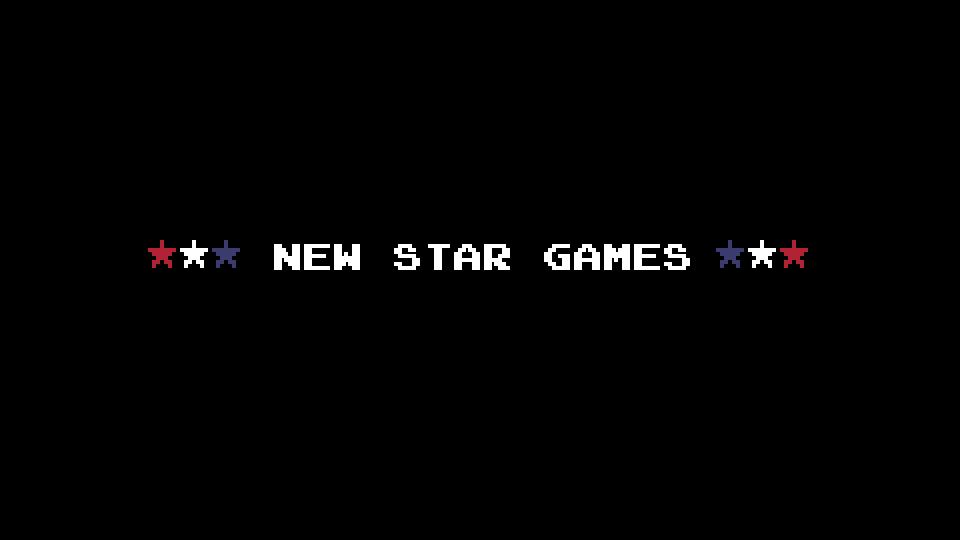

TURN YOUR DEVICE SIDEWAYS
Retro Bowl 2P plays in landscape only.
Screen won't turn? Switch off Rotation Lock, then turn it again.

Tick everything that happened:
Your name, the room code and the game's own log go with it.
DIFFICULTY
✉ FROM SOHAM
Your play is the PLAY OF THE DAY:
It's on the front page for everyone to watch. Want to say something to Soham, who made the game?
Add Retro Bowl 2P to your iPhone’s Home Screen. It opens full screen, with no Safari bars in the way, and starts with one tap.
TAP PLAY TO START A GAME — V474_
DEFENSE DIFFICULTY FOR BOTH PLAYERS
HAVE A CODE? JOIN A FRIEND'S ROOM
★ PLAYS OF THE DAY ·
DIFFICULTY
NO ONE TO PLAY WITH? PLAY SOLO RETRO BOWL →
BLOCKED? PLAY AT coder-1611.github.io/two-player-rb OR realretrobowl2p.web.app — SAME ROOM CODES
HOW TO PLAY · PLAY WITH FRIENDS · UNBLOCKED
BUILT BY LOCAL WEB TECH
YOUR NAME GOES NEXT TO YOUR TEAM ON THE GAME RECORDS
YOU ARE: —
Waiting for opponent…